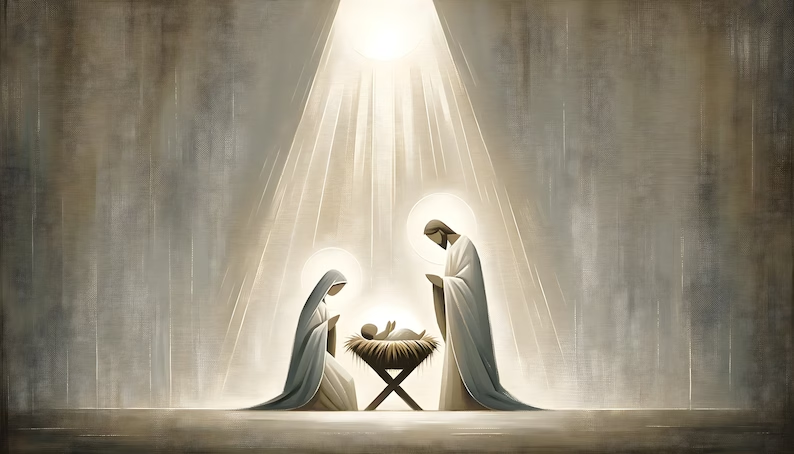

Santa Clara 2nd Ward, 550 Danebo Ave., Eugene, OR
 | The Church of Jesus Christ of Latter-Day Saints
| The Church of Jesus Christ of Latter-Day Saints
The Church of Jesus Christ of Latter-day Saints
Santa Clara 2nd
Ward Sacrament Meeting
December 17, 2023

And so it was, that, while they were there, the days were accomplished that she should be delivered. And she brought forth her firstborn son, and wrapped him in swaddling clothes, and laid him in a manger; because there was no room for them in the inn.
Luke 2:6-7
Welcome Friends, Family and Guests
Sunday Sacrament Meeting Program
Presiding………………………………………Bishop Richardson
Conducting………………………………………Bro. Chris Baxter
Accompanist…………………………………Sis. Cheri Richardson
Chorister………………………………………Sis. Lavonna Barnard
Welcome and Announcements
Opening Hymn #205………..Once in Royal David’s City
Invocation By Invitation
Ward/Stake Business
Sacrament Hymn #182……..We’ll Sing All Hail to Jesus’ Name
Passing
of the Sacrament
Administered
by the Priesthood
High Council Speaker……………………..………Bro. Omar Farah
High Council Speaker…………………………Bro. Victor Valverde
Closing Hymn #212……………….Far, Far away on Judea’s Plains
Benediction By Invitation
Ward Phone Numbers
Bishop – Dennis Richardson………………………541-688-3105
1st Counselor – Nelson Farrier………….…………541-514-1494
2nd Counselor – Chris Baxter……………………...541-910-1191
Ward Exec. Secretary – Clint Chandler……………458-201-9013
Ward Clerk – Lowden Hansen……………………..541-514-7879
Elders Quorum President – Mark Haynes……….…541-910-2976
Relief Society President – Connie Hendrickson……541-515-0776
Primary President – Eryn Salden…………………...541-868-7256
Young Women President – Tricia Bevans……….…541-515-0779
Sunday School President – Jeff Weir………………702-271-0798
Building Representative – Richard Loveall………...541-214-7087
Temple & Family History Leader – Patrick Dahl..…208-589-0072
Full-time Missionaries……………………………...541-543-3190
Ward Mission Leader……………………………….541-579-9998
Ward Calendar Events
Dec. 17: Stake Christmas Program |
Dec. 24: Ward Christmas Program |
Announcements
2024 Church Schedule – Sacrament will begin at 12:00pm with 2nd hour from 1:10 – 2:pm. Book of Mormon is the 2024 topic of study for Come Follow Me.
Pass Along Party – January 6th in the gym at River Road church building (3132 River Road, Eugene, OR) 9am-2pm (NO early drop offs please - just hours of the activity only). Questions/comments/feedback or to volunteer - please contact Rita Humphrey (541) 521-9660(SC6), Lauren Yorgesen (541) 520-2876(SC4), or Jenny Noall-Welker 541-497-1120 (SC1).
Ward Choir – Anyone interested, including Youth 14+, are invited to join us Sundays at 12:40 in the Young Women's room. Please be there if you can spare 30 minutes each week to practice and help to bring the Spirit to our meetings.
Ward Temple Recommend Interviews – The 2nd Tuesday of every month at the Danebo building. 6:00 – 7:00pm. Please contact the Ward Executive Secretary, Clint Chandler, at 458-201-9013 to make an appointment.
Stake Temple Recommend Interviews– In person Stake Presidency interviews will be held on the 2nd and 3rd Tuesdays of the month. These interviews will be held at the Danebo Stake Center in the Stake offices. Please contact Ardel Wicks at 541-228-4136 to make arrangements.
Addiction Recovery Program – The Church's faith-based addiction recovery program is meeting in person at the River Road building every Wednesday evening (or on Zoom) every Wednesday at 7:30pm. Meeting ID: 923 5927 7723 Passcode: 013158 If you have questions, or to be added to the group, text or call Pat Briggs at 541-913-7820
Red Cross Blood Drive – A Red Cross Blood Drive is scheduled from 12:30 – 5:30pm on Dec. 19 @ Danebo. This is literally the Gift of Life and a wonderful service opportunity.
Sunday Ward Bulletin – Items for the Sunday Ward bulletin should be given to Sis. Robin Glaspell by the Wednesday before. Text 541-543-6652 or email: songbird24k@msn.com
Portland Temple Closures – 2023: December 26; 2024: April 29-August 19, October 5, November 27-28, December 24-25.
Family Search Center – The family history center is located at the Institute of Religion building near the University of Oregon campus (768 East 16th Avenue, Eugene).
Family Search Center Hours (revised)
Sunday – Monday: Closed Thursday: 9:00 am – 3:00 pm
Tuesday: 7:00 pm – 9:00 pm Friday: 9:00 am – 3:00 pm
Wednesday: 9:00 am – 3:00 pm Saturday: 10:00 am – 2:00 pm
Youth
Dec. 30: Tri-Stake Youth New Year’s Dance @ Danebo 8:30pm
Lessons
Dec. 17:
Gospel Doctrine: NT Revelation 6-14
“They Overcame...by the Blood of the Lamb”
Dec. 24:
Sacrament Meeting Only. No Classes
MERRY CHRISTMAS!
Dec. 31:
Gospel Doctrine: NT Revelation 15-22
“He That Overcometh Shall Inherit All Things”
January 7:
Gospel Doctrine: Introduction to the Book of Mormon